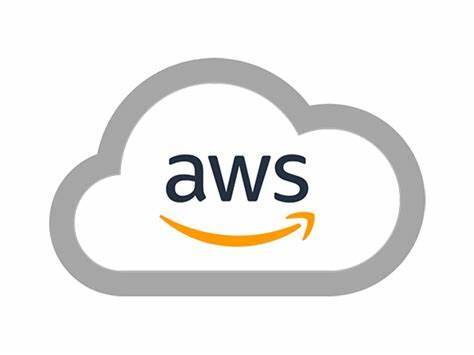

Cloud computing is the on-demand delivery of IT resources over the Internet with pay-as-you-go pricing. Instead of buying, owning, and maintaining physical data centers and servers, you can access technology services, such as computing power, storage, and databases, on an as-needed basis from a cloud provider
Overview: AWS is the cloud computing platform offered by Amazon. It is the largest and most widely adopted cloud platform globally, offering over 200 fully featured services from data centers worldwide.
Key Services: Compute (EC2), Storage (S3), Databases (RDS), Machine Learning (SageMaker), Analytics (Redshift), Networking (VPC), and Serverless Computing (Lambda). Strengths: Extensive global infrastructure, vast range of services, strong security features, and a large ecosystem of partners and third-party integrations. Overview: Azure is Microsoft’s cloud computing service. It provides a wide range of cloud services, including those for computing, analytics, storage, and networking.
Key Services: Compute (Azure Virtual Machines), Storage (Blob Storage), Databases (Azure SQL Database), Machine Learning (Azure Machine Learning), Analytics (Azure Synapse Analytics), Networking (Virtual Network), and Serverless Computing (Azure Functions). Strengths: Strong integration with Microsoft products (Windows Server, Active Directory, Office 365), robust enterprise capabilities, hybrid cloud solutions, and a broad set of compliance certifications.Overview: GCP is Google’s suite of cloud computing services. It offers a range of modular cloud services including computing, data storage, data analytics, and machine learning.
Key Services: Compute (Compute Engine), Storage (Cloud Storage), Databases (Cloud SQL), Machine Learning (AI Platform), Analytics (BigQuery), Networking (VPC), and Serverless Computing (Cloud Functions). Strengths: Strong capabilities in data analytics and machine learning, advanced networking technologies, competitive pricing, and integration with Google services and tools.